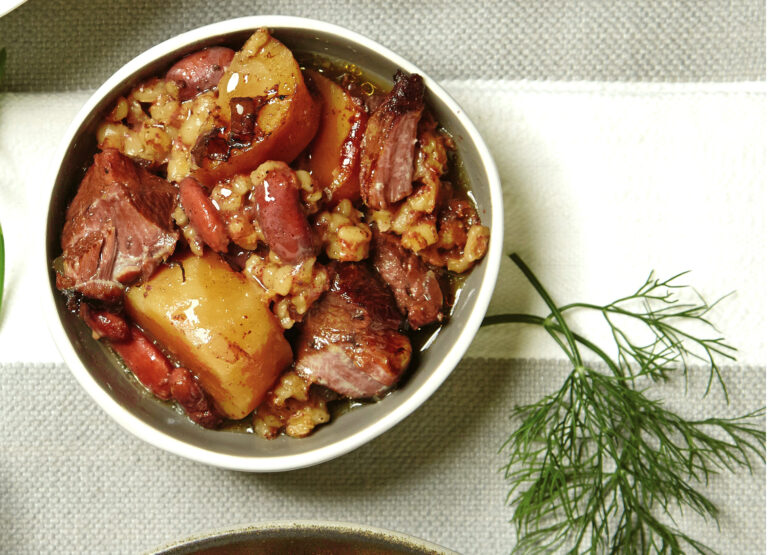

Home
Classic Cholent

Growing up, the savory, slow-cooked aroma of cholent wasn’t just a
smell—it was the official start of Shabbat morning. My father always
prepared a perfectly traditional Ashkenazi cholent every Friday afternoon
with meat, potatoes, onions, barley, beans, and, of course, the
indispensable kishke. I can still recall
coming right downstairs to taste a bite, and to this day, it remains my
favorite Shabbos morning breakfast.
Ingredients
- 2 yellow onions chopped
- 2 small potatoes cubed
- 2 pounds beef stew meat cubed
- 2-4 marrow bones optional
- 1 cup pearl barley
- 1/2 cup kidney beans
- 1 tablespoon paprika
- 1 teaspoon cumin
- 1 teaspoon turmeric
- 1/2 teaspoon chili powder
- 2 tablespoons honey
- 1 kishka optional
- 3-4 cups of water
- Salt and pepper to taste
Instructions
- Place the onions and potatoes in the bottom of the slow cooker.
-
Top with the beef stew meat and marrow bones. Sprinkle the meat with
salt and pepper. Add the barley and kidney beans, then sprinkle on the
paprika, cumin, turmeric and chili powder.
-
Drizzle the top of the cholent with honey, top with the kishka, then
pour the water over the top to cover the beans. Cover the slow cooker
and cook on low heat overnight, or for at least 8 hours.